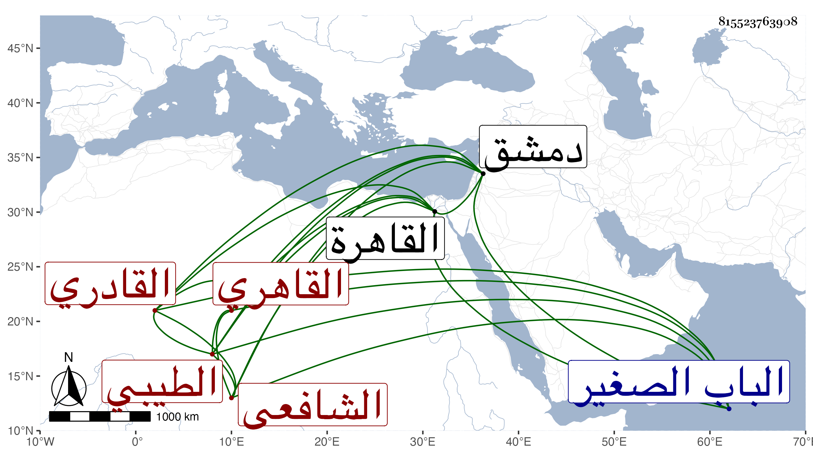

0902Sakhawi.DawLamic.ITO20230111-ara1.EIS1600.815523763908
Biography ID: 815523763908
357
محمد بن محمد بن علي بن إبراهيم أبو الفتح الطيبي القاهري الشافعي القادري وهو بكنيته أشهر . ولد في رجب سنة إحدى عشرة وثمانمائة بالقاهرة وكان أبوه صالحا قانتا فنشأ في كفالته فحفظ القرآن واشتغل يسيرا وسمع على الكمال بن خير الكثير من الشفا بل سمعه بفوت على الشرف بن الكويك مع أربعي النووي في آخرين كالولي العراقي والواسطي سمع عليهما المسلسل وجزء الأنصاري وعلى ثانيهما فقط جزء ابن عرفة وجزء البطاقة ونسخة إبراهيم بن سعد وابن الجزري وشيخنا وأجاز له جماعة ، وتكسب بالشهادة وجلس في حوانيتها وبرع فيها مع حسن الشكالة والبزة والعشرة وجودة التلاوة في الجوق ولذا كان يتردد لزيارة الليث وترافق مع أبي الخير النحاس فيها فلما ارتقى النحاس اختص به ولزم القيام بخدمته فأثرى وكثر ماله وركب الخيول واستقر به في دمشق ناظر الجوالي ووكيل بيت المال فلم يحسن المشي بل مشى على طريقة مخدومه في الظلم والعسف بحيث كتبت في كفره فما دونه محاضر وقدم البلاطنسي للشكوى منه ، وآل أمره إلى أن ضربت عنقه صبرا في ليلة الأربعاء رابع عشر رمضان سنة أربع وخمسين تحت قلعتها ودفن من الغد بمقبرة الباب الصغير جوار أويس القرني وكانت جنازته حافلة من العوام والفقراء وغيرهم وانتاب الناس لقبره أياما وأكثروا من البكاء عليه بل صاروا يقولون هذا الشهيد هذا المظلوم هذا المقهور بعد أن حالوا بين السياف وبين قتله بحيث لم يتمكن منه أياما إلى أن أخذ على حين غفلة منهم وكذا حاول القاضي اعترافه بما نسب إليه ولو بالاستغفار والتوبة فلم يذعن وصار كلما التمس منه ذلك يكثر التهليل والذكر ونسب البلاطنسي لمزيد من التعصب في شأنه حين أفتى بكفره وإلا فقد فتحت في أيام مباشرته مساجد ومدارس كانت معطلة وجددت عمارة كثير منها بعد إشرافها على الدثور وعند الله تجتمع الخصوم ، وقد لقيته بمجلس شيخنا وغيره وأجاز سامحه الله وإيانا .
